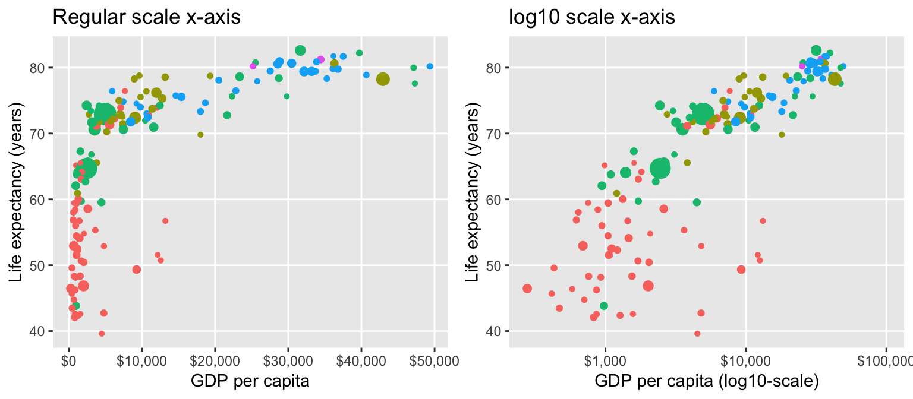
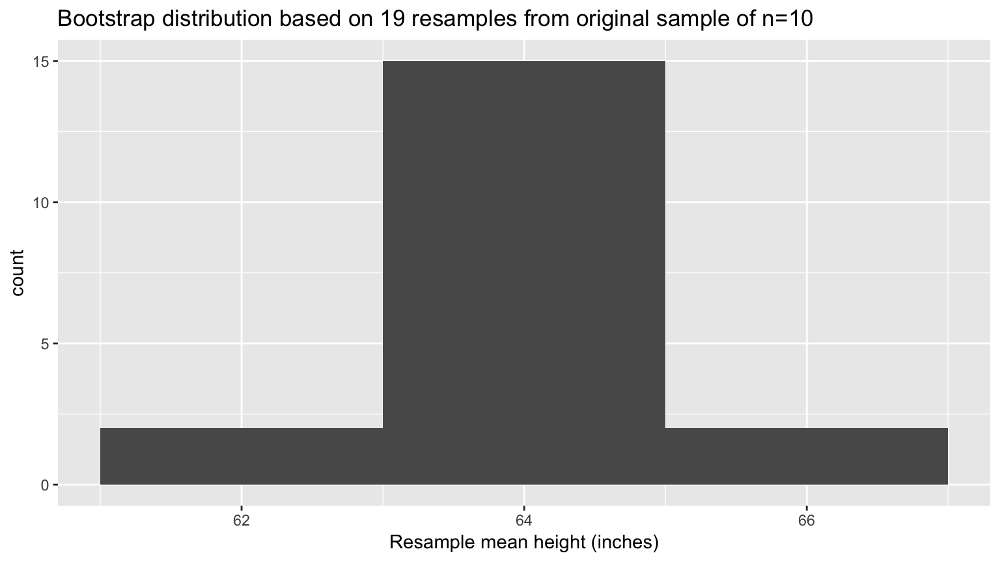
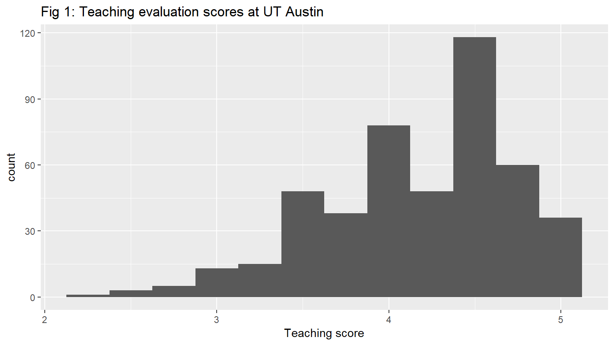
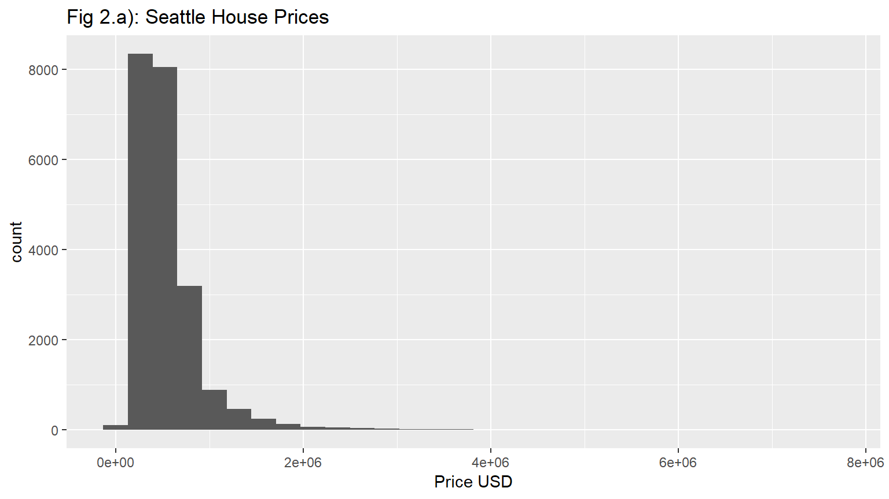
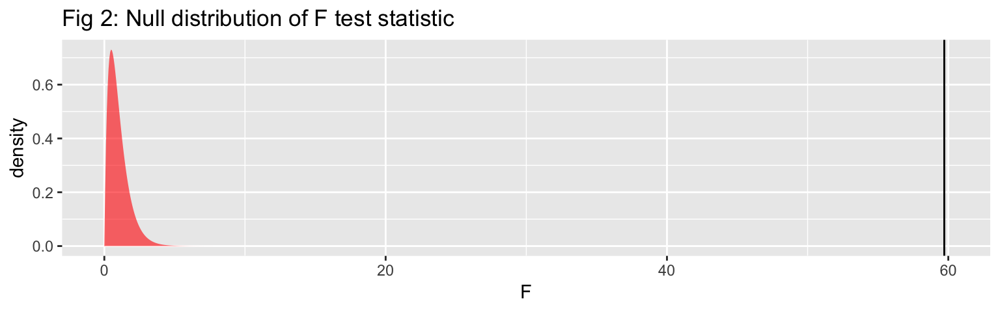
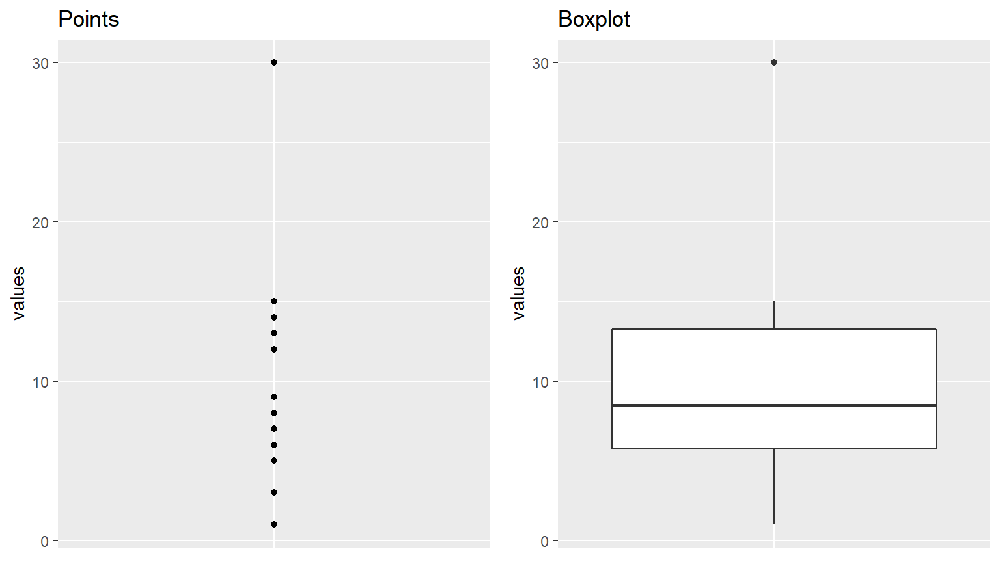

SDS/MTH 220: Intro to Probability and Statistics
Albert Y. Kim
Last updated on 2018-11-16
Schedule
- Topics:
- Getting started (orange): R, RStudio, R packages
- Data science (pink): Data visualization via
ggplot2and data wrangling viadplyr - Data modeling (blue): Correlation, basic regression, and multiple regression
- Statistical background (green): Random assignment for causal inference, random sampling for statistical inference, sampling distributions, and standard errors.
- Statistical inference (yellow): confidence intervals, hypothesis testing, inference for regression, other inference methods
- Readings + Reference: MD is ModernDive, OI is OpenIntro.
Lec 29: Fri 11/16
Announcements
- Upcoming schedule:
- Mon 11/19: Midterm III review.
- Mon 11/26 (after break): No lecture
Today’s Topics/Activities
1. Chalk Talk
- Connecting sampling distributions and “Hang the DJ” episode
- Analyzing the tactile “resampling with replacement” simulation from Lec28 based on a single sample of size \(n=10\)


2. In-class exercise
3. Tweet of the day
From this past Monday Nov 12:
Huge congratulations to Professor Brad Efron, who wins the statistical equivalent of the Nobel Prize for creating the ‘bootstrap’ method, the ‘best statistical pain reliever ever produced’ https://t.co/tHAHS09Cqv https://t.co/Qei54av5sN
— Royal Statistical Society (@RoyalStatSoc) November 12, 2018
Lec 28: Wed 11/14
Announcements
- Quiz today
Today’s Topics/Activities
1. Chalk Talk
Handout: Recap of ModernDive Figure 8.14 below

2. In-class exercise
Bootstrap tactile resampling simulation based on slips of paper with your name/height written on them. Recall we took a sample of size \(n=10\) students.
Lec 27: Mon 11/12
Announcements
- Term project: No more poster presentations at the end of semester.
Today’s Topics/Activities
1. Chalk Talk
- “Virtual sampling simulation” (by computer)
- In real-life sampling: polls
2. In-class exercise
Read ModernDive 8.3 on “Virtual sampling simulation” and 8.4 with an example on polls.
Lec 26: Fri 11/9
Announcements
- Are you?
- Interested in how to use statistical methods to make causal conclusions about observational data? In other words, when you data was NOT collected through a randomized experiement like a clinical trial or an A/B-test? 💯
- Interested in public health and/or HIV/AIDS?💯
- Interested in finding out how you can use social networks to influence behavior?💯
- Interested in ways to improve health of high risk populations such as people who inject drugs?💯
- Interested in how to use statistical methods to make causal conclusions about observational data? In other words, when you data was NOT collected through a randomized experiement like a clinical trial or an A/B-test? 💯
- Then come to this talk:

Today’s Topics/Activities
1. Chalk Talk
- Discuss tweet of the day
- Normal distribution theory
- “Tactile sampling simulation” (by hand)
2. In-class exercise
Read ModernDive 8.1 & 8.2 on sampling terminology and “Tactile sampling simulation”
3. Tweet of the day
Question: Does living near a Whole Foods cause increases in the likelihood of voting Democrat?
So first, the basics. There are 470 WF across the U.S., and 233/435 CD's have at least 1 WF in them. WF districts did tend to prefer Clinton over Trump, as they had an average 2016 pres. margin of +13 Clinton, while non-WF districts preferred Donald Trump by +8 points. (2/9) pic.twitter.com/Kv11asuuAc
— Grant Gregory (@GrantrGregory) October 21, 2018
Lec 25: Wed 11/7
Today’s Topics/Activities
- Added tips to consider for initial submission
- Class time to work on projects
Lec 24: Mon 11/5
Today’s Topics/Activities
1. Sampling Exercise
Lec 23: Fri 11/2
Announcements
- Updated Midterm II instructions:
- Bring a calculator! Scientific calculators ok, mobile phones not.
- Cover page posted.
- Project proposal feedback delivered. Many groups had a very right-skewed explanatory and/or outcome variable. In those cases, do a
log10()-transformation as seen in the “Modeling with data in the tidyverse” course where wemutate()newlog10_priceandlog10_sizevariables.
Today’s Topics/Activities
1. Chalk Talk
Observational studies vs randomized experiments. In particular recall from PS04:

2. Tweet of the day
Excited about Berkeley’s new Division of Data Science and Information - with 1000 majors already! https://t.co/31WTxPD43l
— Deborah Nolan (@DebAtStat) November 1, 2018
Lec 22: 🎃Wed 10/31🎃
Announcements
- No lab Tuesday 11/20.
- Go over practice midterm questions
Today’s Topics/Activities
1. Chalk Talk
Causal Inference
2. In-class exercise
- Look at Spurious Correlations
- Read ModernDive 6.3.2
3. Install development version of moderndive package
We’re going to install the development AKA beta-version of the moderndive package, which as of this morning includes a new function gg_parallel_slopes() allowing you to create a ggplot of the parallel slopes model. Note, this function is an inelegant hack but it gets the job done (source code on GitHub).
- Install the
devtoolspackage as you normally would install a package. Say yes to any prompts. - Run the following line in your console to install the development version of the
moderndivepackage off of GitHub.com, specifically thegeom_parallel_slopesbranch:
devtools::install_github("moderndive/moderndive", ref = "geom_parallel_slopes") - Run
library(moderndive)to reload the package. - Run
?gg_parallel_slopesand see if the help file pops up. If it does, your installation worked! - Run example code at the bottom of the help file to see it in action! You should get the following plot:

Lec 21: Mon 10/29
Announcements
- Joint SDS/Government faculty hiring: First candidate is coming to campus tomorrow (Tuesday 10/30)! They will be holding a “mock lecture” at 5pm in Sabin-Reed 301 where they will teach a lecture on an intermediate/advanced topic in an way that is accessible to undergrads.
- Office hours tomorrow:
3-6pm3-5pm. - Midterm II topics.
- Project proposal feedback over Slack tomorrow!
Today’s Topics/Activities
1. Chalk Talk
- Recall: There are two possible models for regression with one categorical and one numerical \(x\) explanatory variable:
- Parallel slopes model: easy to interpret, hard to make a
ggplotof. - Interaction model: harder to interpret, easy to make a
ggplotof.
- Parallel slopes model: easy to interpret, hard to make a
- Last Friday: Parallel slopes model
- Today: Interaction model
2. In-class exercise
Read ModernDive Chapter 7.2.3 - 7.2.5.
Lec 20: Fri 10/26
Announcements
- From Smithies in SDS. Entirely student-run data science day! Saturday, November 3rd 10am-2pm! RSVP through the Smith Social Network here!

Today’s Topics/Activities
1. Chalk Talk
- Last topic needed for term project initial submission.
- Two possible models for regression with one categorical and one numerical \(x\) explanatory variable:
- Parallel slopes model: easy to interpret, hard to make a
ggplotof. - Interaction model: harder to interpret, easy to make a
ggplotof.
- Parallel slopes model: easy to interpret, hard to make a
- Today: parallel slopes model!
2. In-class exercise
Read ModernDive Chapter 7.2.1 & 7.2.2.
3. Tweet of the day
In order for me to be able to recreate/reproduce/replicate your work, I need:
- Access to your data! If you only submitted a
project_proposal.Rfile but not the.csv/.xlsxdata file, I can’t recreate/reproduce/replicate your graphs! - If the code that loads your
.csv/.xlsxdata file looks something like
read_csv("~/Desktop/My Smith Work/2018-19/Term Project/my_data.csv")
When I run this code it won’t load the data since themy_data.csvfile will not be in the same folder on my computer.
Suggested approach: Instead of submitting .csv/.xlsx data files on Moodle, publish your data to the web and load into R from there!
- Click on tweet below to see all steps
- Publish your data to the web (only if it is non-sensitive nor non-private)
- Update your project proposal with the
read_csv("WEBLINK TO YOUR DATA")code that loads the data and test all your code to ensure it all runs. - Group leader only: Resubmit your
project_proposal.Rfile in a Slack group DM that has me and all your group members by Saturday 10/27 at 5pm.
Hey data science ed types! If you don't want to deal w/ teaching relative vs absolute file paths when loading CSV's into #rstats at first (I favor punting until later), have your students publish their (non-sensitive data) CSV's to Google Sheets!
— Albert Y. Kim (@rudeboybert) October 26, 2018
Lec 19: Wed 10/24
Announcements
- 🔥SDS Major Flowchart 🔥: All courses highlighted in red in the flowchart below will be offered in Spring 2019, along with the following core 5 courses (left-most grey block in flowchart):
- SDS 201/220: Intro Stats
- SDS/MTH 291: Multiple Regression
- CSC 111: Intro Programming (in Python)
- SDS 192: Intro to Data Science
- MTH 211: Linear Algebra
- Course descriptions: Check out Smith Course Search for SDS courses, CSC courses, and MTH courses.
Today’s Topics/Activities
1. Chalk Talk
Piggy-backing off of last lecture’s ModernDive 7.1.1 “Exploratory Data Analysis”, fitting and interpreting multiple regression models!
2. In-class exercise
- ModernDive 7.1.2: Multiple regression
- ModernDive 7.1.3 & 7.1.4: Fitted/observed values and residuals. Very short. The idea is identical as for basic regression!
Lec 18: Mon 10/22
Announcements
- Office hours this week:
- Mon 10/22: 3-3:50pm and 5:10-6pm
- Tue 10/23: 3-4:30pm
- My time at the 2018 Women in Statistics and Data Science conference. See tweets below!
- Today: For those of you with a chemistry/biochemistry slant to your studies, my good friend from Middlebury College, Prof. Lesley-Ann Giddings (Smith Class of ’05) will be giving a seminar today “Engineering Novel N5-Hydroxylases to Access Bioactive” from 4-5pm in Ford Hall 240.
- Tomorrow: Interested in majoring in SDS? Presentation of the major on Tue 10/23 from 12:15-1:05pm in Ford Hall Atrium.

Today’s Topics/Activities
1. Chalk Talk
- Finishing regression with one categorical explanatory/predictor variable
- Starting regression with two numerical explanatory/predictor variables
2. In-class exercise
- MD 6.2.3 - 6.2.4: Finishing regression with one categorical explanatory/predictor variable
- MD 7.1.1: Exploratory data analysis of two numerical explanatory/predictor variable:
- 3D scatterplot
- Code to create above scatterplot here
3. Tweets of the day: Posters!!!
Ok folks, we’re doing posters for the your final presentation
Great #WSDS2018 morning poster session in a posh setting: the @netherlandplaza Hall of Mirrors! pic.twitter.com/PH7BdfzHKX
— Albert Y. Kim (@rudeboybert) October 20, 2018
@SmithCollegeSDS ugrad @nat_laboss explaining the components of her structural equation model of mental health to an extra receptive audience pic.twitter.com/AKxqtLFhmw
— Albert Y. Kim (@rudeboybert) October 20, 2018
This is what rocking a poster session looks like #smithieslead #wsds2018 pic.twitter.com/A4QxJ8lwkM
— Smith College SDS (@SmithCollegeSDS) October 19, 2018
Flashback Friday to yesterday when these three @SmithCollegeSDS students presented their research that started as a project in Prof. @bencapistrant ‘s Population Health SDS course last spring. #WSDS2018 #smithieslead pic.twitter.com/AEikQ6N3JT
— Miles Ott 🏳️ 🌈 (@Miles_Ott) October 19, 2018
4. More tweets!!! More Smith SDS!!!
Smith College SDS student Emily Daubenspeck presenting joint work with Smithies @CrystalZangZZ and Caterina Baffa on cognitive decline of veterans using BRFSS data @SmithCollegeSDS students are rocking #WSDS2018 #smithieslead pic.twitter.com/wc8umbmkdM
— Miles Ott 🏳️ 🌈 (@Miles_Ott) October 18, 2018
@smithcollege is in the building! If you see us, say hi! #WSDS2018 pic.twitter.com/yvwsD5z0JQ
— Smith College SDS (@SmithCollegeSDS) October 18, 2018
Lab: Thu 10/18 + Tue 10/23
Materials for Jenny’s lab on Data Wrangling are here:
Lec 17: Wed 10/17
Announcements
- No lecture on Friday!
- Follow what’s going on at the 2018 Women in Statistics and Data Science Conference on Twitter at:
- PS06 posted.
- Lab materials for Thu 10/18 (tomorrow) and Tue 10/23 are posted above.
- In-class time to work on projects.
Lec 16: Mon 10/15
Announcements
Today’s Topics/Activities
1. Chalk Talk
- Least squares line
- Regression with a categorical explanatory variable
2. In-class exercise
- MD 6.3.3
- MD 6.2. From the beginning of 6.2 up to and including the end of 6.2.2.
Lec 15: Fri 10/12
Announcements
- Posted (imperfect) grading rubrics underneath each Problem Set on Problem Sets page:
- I only have one grader in this course who is an undergrad. Giving detailed feedback is hard; so I ask you to compare your solutions to the posted solutions and do a “self-evaluation.” However, you will get lots of feedback at every stage of the project!
- I need a mechanism for rewarding students who do something “extra” or “exceptional.” However this will always be only a small portion of grade. Think of “extra” or “exceptional” this way:
- What is a checklist of criteria for a “great” calculus assignment?
- What is a checklist of criteria for a “great” essay?
- Guess what the term project for this course and hence also all the practice problem sets are more like? A calculus assignment or an essay?
- Going forward, however, I will post the (imperfect) grading rubric ahead of time.
- Keep in mind the problem sets are worth 10% of final grade, and two lowest ones are dropped.
- Added hints to PS05.
- Where is the final project, and hence the course, heading? Some past final project examples.
- Please only access ModernDive using the link on the course webpage. Because of webpage problems in the last few weeks, I’ve had to change where ModernDive was hosted (saved online).
- Upcoming schedule, so plan accordingly:
- Tonite: Reminder of talk below.
- Wed 10/17: In-class time to work on projects. Right after lecture I leave for the 2018 Women in Statistics and Data Science Conference along with Prof. Miles Ott and a group of Smithies who will be presenting. I will be too busy to answer Slack questions until Sunday.
- Thu 10/18 Lab Sec 05: Jenny will be conducting a
dplyrreview session. - Fri 10/19: No lecture! Project proposal due at 5pm!.
- Tue 10/23 Lab Sec 06: Jenny will be conducting a
dplyrreview session.

Today’s Topics/Activities
1. Chalk Talk
- Refresher on
%>%and data wrangling verbs (look at cheatsheet). - Residual analysis.
2. In-class exercise
Read ModernDive Chapter 6.1.4 and 6.3.3.
Lec 14: Wed 10/10
Announcements
- Extension on PS04 until
5pm9pm. - Returned Midterm I
- Go over
PS05.Rmd
Today’s Topics/Activities
1. Chalk Talk
Residual analysis.
2. In-class exercise
Read ModernDive Chapter 6.1.4 and 6.3.3.
3. Tweet of the day
Hey stats+data science educators! Do your students 😱 when seeing 😡 errors, 😡 warnings, 😡 messages in #rstats? In the next update of https://t.co/LmQoQNNe9r in early 2019, they can get 😌 by reading @ModernDive 2.2.3, just contributed by @andrewheiss! pic.twitter.com/67YzZf7yXU
— ModernDive (@ModernDive) October 9, 2018
Lec 13: Fri 10/5
Announcements
- Two
#pollstoday:- Webpage redesign?
- Look at tweet of the day below and vote, do you like the building?
- Labs next week: none Tuesday because of break, Thursday lab will take place given that Mountain Day was a Thursday.
- Interested in majoring in SDS? Check out our presentation of the major on Tuesday 10/23 from 12:15-1:05pm in Ford Hall.
Today’s Topics/Activities
1. Chalk Talk
get_regression_table()andget_regression_points()wrapper functions- Looking at ModernDive Figure 6.8
- Fitted values
- Residuals
2. In-class exercise
Read ModernDive 6.1.3.
3. Tweet of the day
Boston University is going to build a new 17-floor “Data Sciences Center” on Commonwealth Avenue, designed to look like a stack of books. 👍 or 👎?
Boston University unveils plans for book-inspired data sciences center on Comm. Ave. https://t.co/XpnDGATpnE pic.twitter.com/A8LMpYoB7K
— Boston.com (@BostonDotCom) October 3, 2018
Lec 12: Wed 10/3
Announcements
- ModernDive learning check solutions for Chapter 4 + 5 now posted in Appendix D.
- Talk on Friday 10/12 5:30pm in Seelye Hall 106.
Today’s Topics/Activities
1. Chalk Talk
- Correlation coefficient: ModernDive Fig. 6.18
- Fitted regression line: ModernDive Fig. 6.6
- Pseudocode (also see tweet of the day below)
2. In-class exercise
- Turn your computer’s volume up to the maximum and play Guess the Correlation
- Read ModernDive Chapters 6.3.1 and 6.1.2.
- Look at solutions below to “cleaning variable names” exercise from Lec11. What do I do if my data frame has horrible variable/column names? Copy and paste this code into your
scratchpad.Rand run all 4 steps individually. This will help for your projects.
# Step 1: Manually create a data frame with ugly names
library(dplyr)
example_data_frame <- data_frame(
`WEIRD !@$^&*() Variable.name` = c(1, 2, 3),
`more WEIRDNESS %` = c("pamplemousse", "cran-raspberry", "tangerine")
)
# Look at these awful names!
example_data_frame
# Step 2: The janitor package to the rescue!
library(janitor)
# Step 3: Use the clean_names() function in the janitor package to create a new
# data frame with cleaner names
data_frame_with_cleaner_names <- example_data_frame %>%
clean_names()
# Step 4: Compare these column names with the ones from above. Much cleaner!
data_frame_with_cleaner_names3. Tweet of the day
On writing “pseudocode”: a rough outline that is “sort of” like code that outlines the steps of what your code will do. You can think of pseudocode as a “blueprint” of your “building”; before you build your building, you need a plan! Here are examples of “pseudocode” for the data wrangling exercise from Learning Check 5.19 in ModernDive on taking the data in nycflights13 and computing Available Seat Miles
Students writing out #dplyr pseudocode to compute “Available Seat Miles” (✈️ measure of capacity) using #nycflights13 #rstats package. Not only was most pseudocode good, but many were able to code it up on day 3 of data wrangling! 😮😮😮 https://t.co/BHozXZWjU0 #chalktalk pic.twitter.com/0mzTYalGXa
— Albert Y. Kim (@rudeboybert) February 15, 2018
Lec 11: Mon 10/1
Announcements
- Office hours this week. Please Slack me if this disrupts your plans.
- Monday 10/1:
3-6pm2:30-4:30pm - Tuesday 10/2:
3-6pm2-4:30pm
- Monday 10/1:
Today’s Topics/Activities
1. Chalk Talk
- What is modeling?
- What is R Markdown?
library(ggplot2)
library(moderndive)
# Teaching evaluation score
?evals
ggplot(evals, aes(x = score)) +
geom_histogram(binwidth = 0.25) +
labs(x = "Teaching score", title = "Fig 1: Teaching evaluation scores at UT Austin")
# Seattle house prices (x-axis in original scale)
?house_prices
ggplot(house_prices, aes(x = price)) +
geom_histogram() +
labs(x = "Price USD", title = "Fig 2.a): Seattle House Prices")
2. In-class exercise: R Markdown
At a couple of steps in this process, you may be asked to install packages. Say yes to all of them.
- Fiddle with RStudio settings:
- Go to RStudio menu bar -> Tools -> Global Options… -> R Markdown
- Uncheck box next to “Show output inline for all R Markdown Documents”
- Create new R Markdown
.Rmdfile:- Go to RStudio menu bar -> File -> New File -> R Markdown
- Set “Title” to “My first R Markdown report” and “Author” as your name.
- “Knit” a report:
- Click on the disk icon and save this file as
firstname_lastnamesomewhere on your computer. This will create a file calledfirstname_lastname.Rmd - Click the arrow next to “Knit” -> “Knit to HTML”. An HTML webpage should pop up.
- Click on the disk icon and save this file as
- Publish this report on web:
- Click on blue “Publish” button on top right
- If you haven’t previously, create an account on Rpubs.com. If you have previously, login.
- Set “Title” to “My first R Markdown report” and “Slug” to “testing”
- You should end up with a webpage that looks like this one.
- Share the URL (webpage link) to your report to your project groupmates in a Slack DM.
- Update your report on web:
- Make some trivial change to your
testing.Rmdfile. - “Re-knit” your report and make sure your trivial change is reflected.
- The blue “Publish” button should now read “Republish”
- Click “Update existing”
- Share the link to your updated report with your groupmates on Slack!
- Make some trivial change to your
3. In-class exercise: ModernDive
- Read ModernDive from the beginning of Chapter 6 up to and including 6.1.1. Note:
- Make sure to install all the new packages listed in “Needed Packages”.
- You can skip the DataCamp course for now; this will be assigned later.
- Learning how to learn: See if you can figure out how to use the
clean_names()function referenced below. Ask your seatmates, me or the data assistant for help.
4. Tweet of the day
How quickly clean variable names; this might be useful for your projects.
janitor::clean_names() is 💵💲💰! But wait, there's more! https://t.co/Rk1aZRZWq0 Thanks @samfirke #rstats pic.twitter.com/H9Bvde8roy
— Albert Y. Kim (@rudeboybert) February 13, 2018
Test this function on example_data_frame below:
library(dplyr)
example_data_frame <- data_frame(
`WEIRD !@$^&*() Variable.name` = c(1, 2, 3),
`more WEIRDNESS %` = c("pamplemousse", "cran-raspberry", "tangerine")
)
example_data_frameLec 10
Announcements
- Office hours today 3-4pm
- Read cover page for midterm on midterms page.
Today’s Topics/Activities
1. Chalk Talk
- From last time: Grouping then summarizing: First
group_by()to group rows together (the grey, blue, green color assignment) thensummarize()to get group-by-group summaries (a summary statistic for each color). - Create new variables using
mutate() - Arrange rows using
arrange()orarrange(desc()) - Subset columns with
select()
2. ModernDive Roadmap Update
We just completed “just enough data science” (data visualization and data wrangling) to do the rest of ModernDive. In particular
- Data modeling with the
moderndivepackage (top right blue box) - Statistical inference with the
inferpackage (bottom right blue box)

For more advanced data visualization and data wrangling, take SDS 192: Intro to Data Science.
3. In-class exercise: ModernDive
As marked in the Schedule at the top of this page, read ModernDive 5.6-5.7, 5.9.1
Lec 9
Announcements
- Albert extra office hours Thursday 2-4pm in McConnell 215.
- Project proposal submission format added. Just follow along and replace my example with your work!
- Solutions to PS02 posted
- Please download the
PS02_solutions.Rfile to your computer and open them in RStudio for a brief in-class discussion. - To guarantee the
PS02_solutions.Rfile opens in the RStudio app (AKA a car’s dashboard) and not the regular R app (AKA a car’s engine), don’t double-click thePS02_solutions.Rfile directly, but rather go to Files panel of RStudio and find/click/open the file from there.
- Please download the
- Midterm I practice questions discussion. See midterms page.
Today’s Topics/Activities
1. Chalk Talk
a) Summarizing: Note “summarise” is the British English spelling of the American English “summarize”. Both summarise() and summarize() work in R.
| Use any summary function | To summarize() data |
|---|---|
 |
 |
b) Grouping then summarizing: First group_by() to group rows together (the grey, blue, green color assignment) then summarize() to get group-by-group summaries (a summary statistic for each color).

2. In-class exercise: ModernDive
As marked in the Schedule at the top of this page, read ModernDive 5.4-5.5
Lec 8
Announcements
- Lecture on today will start at 1:20pm to give people time to comfortably get from Emily Dodwell’s talk listed in Lec06.
- Visitor: Data Counselor Raul Zelada Aprili
- Submission format for Term Project Proposal on Wednesday.
- Discussion on Midterm I. See Midterms page.
- Lab tomorrow/Thursday
- Jenny will go over a data viz recap lab which will be helpful for Midterm I studying.
- After that you can work on Problem Sets.
- However you allocate your time, Jenny and I ask you stay until the end of lab period as getting up and leaving is very disruptive. For example, we suggest you do exercises in DataCamp Practice Mode to reinforce what you’ve already learned!
Toay’s Topics/Activities
1. Chalk Talk
- Coding functions: arguments as inputs
%>%is the “pipe” operator, pronouned “then”- First data wrangling “verb”:
filter()to subset rows:

2. In-class exercise: ModernDive
As marked in the Schedule at the top of this page, read ModernDive 5-5.3
3. Tweet of the day
While networking may come naturally to some, it doesn’t to most. It takes work, courage, and practice! For example, start small & low risk! A simple tweet can be the beginning of a meaningful relationship!
It was great finally meeting you IRL too after all this time of virtual acquaintance! It's nice knowing you are real person and not just a sequence of 0's and 1's 🤖🤖🤖
— Albert Y. Kim (@rudeboybert) September 23, 2018
Lec 7
Announcements
- Go over questions in
#randomSlack channel - Monday is Midterm I review
- ModernDive Learning Check solutions are
directly under question statementnow all in Appendix D at the back of the book. - Lecture on Monday will start at 1:20pm (10 minutes later) to give people time to comfortably get from Emily Dodwell’s talk listed in Lec06 to class.
- Next step of Term Project: Project proposal due Friday 10/19
- Videoconferencing: In Slack, in a Direct Message, type
/appear SOME_UNIQUE_NAME_ONLY_YOU_WOULD_THINK_OF
Todays Topics/Activities
1. Chalk Talk
- Finish data visualization. Table in ModernDive Chapter 3.9
- Ink/information ratio
- Secret to mastering packages
2. Project Time
Start your projects!
3. Tweet of the day
ModernDive co-author Chester Ismay @old_man_chester is Senior Curriculum Lead at DataCamp. If you are curious for a “big picture” view of why we are using DataCamp, read the linked blogpost, in particular look at the image of the “data science pipeline”. Remember, you have free access to all DataCamp courses for 6 months!
Read this blog post by @old_man_chester to learn about our new Tidyverse Fundamentals with R Skill Track! In this track, you’ll learn the skills needed to get you up and running with data science in R using the #tidyverse. https://t.co/4fqAdJgoTX pic.twitter.com/RsYxe4Hpm5
— DataCamp (@DataCamp) September 20, 2018
Lec 6
Announcements
- Curious about a career in data science? Then come for Emily Dodwell (class of 2011)’s talk “The Nuts and Bolts of a Data Science Career” on Monday 9/24; stay for the 🍕 lunch! Click here for flyer.
- Problem set 2 posted below.
- Upcoming “Important dates” in schedule above:
- Project groups by this Friday 9/21
- Self-scheduled Midterm I weekend of Friday 9/28
- Learning check solutions by Friday, I promise!
- Slack poll on
scratchpad.R
RStudio Desktop
In this week’s lab sections you’ll get help installing R + RStudio on your computers; the instructions are in ModernDive 2.1.1. Starting on Friday I will assume you are all using the desktop version of RStudio. If you’re still curious about RStudio Server & RStudio Cloud, check out these notes.
So after Friday you’ll be responsible for installing R Packages as described in ModernDive 2.3. In other words, to use a package for the first time:
- You’ll need to install it once.
- Load/open it using
library()command. Ex:library(nycflights13)
Todays Topics/Activities
1. Chalk Talk: Histograms “binning” structure
Comparing Figures 3.10 and 3.11 in the ModernDive readings from Lec 5
library(ggplot2)
library(nycflights13)
# Code to generate Fig 3.10 with bar border color white
ggplot(data = weather, mapping = aes(x = temp)) +
geom_histogram(color = "white")
# Code to generate Fig 3.11
ggplot(data = weather, mapping = aes(x = temp)) +
geom_histogram(bins = 60, color = "white")
2. Chalk Talk: Boxplots
Say we want to plot a boxplot of the following 12 values which are pre-sorted:
1, 3, 5, 6, 7, 8, 9, 12, 13, 14, 15, 30
They have the following summary statistics:
| Min. | 1t Qu. | Median | 3rd Qu. | Max. |
|---|---|---|---|---|
| 1 | 5.5 | 8.5 | 13.5 | 30 |
Let’s copare the points and the corresponding boxplot side-by-side with the values on the \(y\)-axis matching:

3. In-class exercise: ModernDive
As marked in the Schedule at the top of this page, read ModernDive 3.7.
4. Tweet of the day
On imposter syndrome is a psychological pattern in which an individual doubts their accomplishments and has a persistent internalized fear of being exposed as a “fraud”. Click below to read full thread.
Let's talk about imposter syndrome in tech – specifically, ways we can combat it better, both individually and as a community (a thread) 👇
— Caitlin Hudon👩🏼 💻 (@beeonaposy) September 18, 2018
Interesting results from my SDS 192 course earlier today:

Lec 5
Experimenting with RStudio Cloud
Experimenting with RStudio Cloud (on RStudio’s servers) instead of RStudio Server (on Smith College’s Servers).
- Click here to join RStudio Cloud.
- Create an account by clicking the “Login with Google” button and use your Smith email.
- Give yourself whatever login name.
- In the “2018-09 SDS 220” space you should see a “coursework” project. Click on “Copy”.
- Click where it says “coursework” and rename it “Firstname Lastname”. For example in my case “Albert Kim”.
Announceme
nts
- Lab section Tuesday/Thursday:
- Install R + RStudio on your computer
- Start Problem set 2
- What my
scratchpad.Rlooks like after Lec4. Yours shouldn’t be exactly the same, but close.
Note because I saved my work,scratchpad.Ris written in black. If I had unsaved work, this would be written in red.

Today’s To
pics/Activities
1. Chalk Talk
- Histograms visualize the (empirical) distribution of a numerical variable
- Facets + Histograms: Allow you to visualize the conditional distribution of a numerical variable
2. In-class exercise: Comment lines
In the screen shot of my scratchpad.R above, any line that starts with a # are called comment lines. They are ignored by R when you run them in the console. Run both these lines in the console separately:
this is a comment line that R ignores that helps readers (including you!) understand code
# this is a comment line that R ignores that helps readers (including you!) understand codeWhy does one line return an Error whereas the other doesn’t?
3. In-class exercise: ModernDive
As marked in the Schedule at the top of this page, read ModernDive 3.5 and 3.6.
Lec 4
Announcements
- Extra office hours today 3:30-5pm in McConnell 215
- For those of you with interests in Biology: Reed College’s Prof Derek Applewhite “The Spatial and Temporal Regulation of Non-muscle Myosin II Contractility” talk on Monday afternoon.
- Syllabus:
- Added expectations to Basic Information section.
- Added note about when to do DataCamp courses to syllabus: You do not need to complete any DataCamp courses in preparation for future lectures; they will always be explicitly assigned and you will subsequently be given time during Tu/Th lab sections to do them.
- Solutions to previous lecture’s learning checks will be posted directly underneith question. Ex: Look at LC2.1 Solutions I just posted.
Today’s Topics/Activities
1. Chalk Talk
The Grammar of Graphics: the theoretical underpinnings of statistical graphics.
2. In-class exercise: R code scratchpads
Question: Should I be copying/pasting/tweeking code directly in the console window?
Answer: You can, but it makes saving work difficult. Instead, create a “scratchpad”:
- Create a new
.Rscript: In RStudio Menu Bar -> File -> New File -> R Script. - Save this as
scratchpad.R - Copy/paste/tweak any code in your scratchpad, not in console window. For example, for this exercise write:
1+1 - To “run” code in the console (in other words tell R to “do this”), you can do one of the following:
- Copy it from scratchpad, then paste it in console, then hit enter.
- Highlight the code you want to run, then click on “Run”
- Highlight the code you want to run, then press control+enter on Windows/Unix/Chromebook or ⌘+enter on macOS.
- Save and close the file.
- In the Files panel, click on
scratchpad.Rto reopen your previously saved work.
3. In-class exercise: ModernDive
As marked in the Schedule at the top of this page, read ModernDive 3-3.3.1 (start of Chapter 3 to the end of 3.3.1).
- Do not ignore the “Needed Packages” section at the beginning. Recall:
- The phone vs app analogy described in ModernDive 2.3.
- If you are using RStudio Server in your browser, these packages come pre-installed.
- If you are using RStudio Desktop installed on your computer, you’ll have to ensure these packages are installed.
- Please skip the “Introduction to the Tidyverse” DataCamp course mentioned at the beginning of Chapter 3 for now.
- “Learning checks”: These are practice problems that you do not need to submit. Should you write your answers down? If you feel like you would benefit, then yes! I will post solutions to the learning checks before the next lecture!
- Note: In this class, of the “Five Named Graphs” described in ModernDive 3.2, we’ll only cover scatterplots, histographs, and boxplots; we’ll be skipping linegraphs and barplots.
Lec 3
Announcements
- Go over previous Slack
#general_announcements - If you haven’t already, please complete the Intro Survey from Lec 1.
- Self-scheduled Midterm II has been moved from Fri 10/26 thru Sun 10/28 to Fri 11/2 thru Sun 11/4 because of family weekend.
- Syllabus:
- Added full topic schedule
- Added office hours
- Added “Expectations” to following sections: Topic Schedule and Readings, Evaluation, Accommodations, Code of Conduct
- Extra office hours: Friday 9/14, 3:30-5pm in McConnell 215
Today’s To
pics/Activities
- Go over ModernDive Chapter 2. Note:
- You can skip all videos and linked DataCamp courses.
- “Learning checks”: These are practice problems that you do not need to submit. Should you write your answers down? If you feel like you would benefit, then yes! I will post solutions to the learning checks before the next lecture!
Getting he
lp
A big part of learning data science tools is learning how to get help effectively. For example, in this course:
In class:
- Ask yourself “Is this something I can Google?” Learning to use Google effectively is an important tool in a data scientist’s toolbox.
- Ask the people sitting next to you.
- Raise your hand to ask the data assistant or myself.
Outside of class:
- Ask yourself “Is this something I can Google?” Learning to use Google effectively is an important tool in a data scientist’s toolbox.
- Ask yourself “Are there people I work with in class that I can Slack?”
- If you all don’t know, post a question on Slack in the
#r_questionschannel. - Visit the Spinelli Center for tutoring Sunday-Thursday 7-9pm (see syllabus for more info).
Lec 2
- Slack
- I’ve separated our class Slack team from the previous one. Please join the new one by clicking here.
- Practice sending formated messages to a classmate.
- Getting started with data in R
- Click “R” in the menu bar above to open RStudio Server to use R in your web-browser.
- Click on ModernDive above and read Chapter 2: Getting started with data.
- You don’t need to watch the videos for now
- If you are using RStudio Server, you don’t need to install packages. However, you will need to load them.
- Learning checks: These are practice problems to reinforce your learning. You do not need to submit today’s learning checks.
- Lab Tuesday/Thursday Start the DataCamp portion of Problem set 1. Jenny will help you get used to the DataCamp interface.
Lec 1
- What is inference demo.
- From the ModernDive Introduction for Students:

- It all builds up to the
inferpackage for “tidy” statistical inference. Only if you’re curious:
TODO’s
- Make sure:
- You can login to RStudio Server (click R icon in menubar above).
- You are part of the class Slack team (click hashtag icon in menubar above) and
- Have added a profile picture
- Can see the
#220_intro_stats,#moderndive_typoes,r_questions, andrandomchannels - Have turned on email notifications
- You have received an invitation email to DataCamp and are a member of the group. Do not create an account separately on datacamp.com, but rather use the link in the email you received.
- You’ve completed the Intro Survey
- Need help with any of the above?
Fill out this Google FormSlack me!